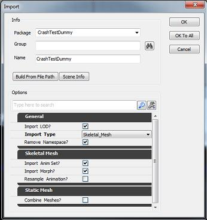
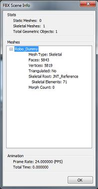
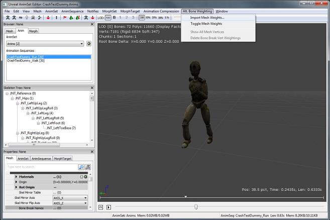

UDN
Search public documentation:
FBXImporterUserGuide
日本語訳
中国翻译
한국어
Interested in the Unreal Engine?
Visit the Unreal Technology site.
Looking for jobs and company info?
Check out the Epic games site.
Questions about support via UDN?
Contact the UDN Staff
中国翻译
한국어
Interested in the Unreal Engine?
Visit the Unreal Technology site.
Looking for jobs and company info?
Check out the Epic games site.
Questions about support via UDN?
Contact the UDN Staff
Unreal FBX Importer User Guide
- Unreal FBX Importer User Guide
Overview
FBX is a file format owned and developed by Autodesk. It is used to provide interoperability between digital content creation applications Autodesk MotionBuilder, Autodesk Maya and Autodesk 3ds Max. Autodesk MotionBuilder software supports FBX natively, while Autodesk Maya and Autodesk 3ds Max software include FBX plug-ins. In this version, the importer is able to import static meshes, skeletal meshes and skeletal animation. The advantages of the Unreal FBX Importer over the current importing methods are:
- Static mesh, skeletal mesh, animation in a single file format.
- Multiple assets/content can be contained in a single file.
- Import of multiple LODs and Morphs/Blendshapes in one import operation.
- Longer parsing times.
- File naming schemes are more complex.
Import dialog window
This dialog box appears when the user chooses an import option from either the Content Browser or AnimSet Editor, and selects the FBX file to import. 
General
These options apply to both static meshes and skeletal meshes.- Import Type - Automatically derived from the selected file header. If the file contains Deformers, Import Type is set to Skeletal Mesh, otherwise it is set to Static Mesh. When import type is Skeletal Mesh, static meshes in FBX file are not be imported.
- If the original type is Static Mesh, but the user changes this to Skeletal Mesh, nothing will be imported since no skeleton with deformations is found.
- If the original type is Skeletal Mesh, but the user changes this to Static Mesh, the meshes are imported as static meshes.
- Override Full Name - If enabled, the name field will be used as the meshes name. Otherwise the name of the mesh in the FBX file will be used.
- Import Mesh LODs - If enabled, creates LOD models for Unreal meshes from LODs defined in the file. Otherwise, only the base mesh from the LOD group is imported. For skeletal meshes, the LOD models can be skinned to the same skeleton, or a different skeleton. If the LOD model is skinned to a different skeleton, it must meet the Unreal LOD requirements, with the exception that the name of the root bones can be different since the FBX importer renames the root bones automatically.
- Import Tangents - Imports the tangent basis for the content(if it exists in the FBX file) instead of computing a new one. This is useful if you have made custom adjustments to tangents in a DCC program. Note: This may increase vertex count to maintain unique tangents
Skeletal Mesh
- Import Morph Tergets - Creates Unreal morph objects for skeletal meshes. Both Maya Blendshapes and 3ds Max Morph modifiers are supported.
- Import Animations - Creates a new AnimSet based on all animations available in the FBX file for the selected skeletal mesh.
- Import Rigid Animation - Creates a skeletal mesh and AnimSet out of any rigid animation data in the file.
- Resample Animations - Resamples all animation curves to 30 FPS. Dependent on the Import AnimSet option.
- Advanced
- Use T0 as Ref Pose - Uses the pose at Time=0 as the ref pose instead of the ref pose in the file
- Split Non Matching Triangles - Preserves smoothing groups on skeletal meshes by splitting triangles (making their vertices and normals unique). Note: this will increase vertex count depending on the number of smoothing groups on the mesh
- Import Meshes In Bone Hierarcy - Imports meshes in the bone hierarchy instead of converting them to bones (which is done by default because workflow sometimes contain meshes as dummy bones)
Static Mesh
- Combine Meshes - Combines all static meshes in the file into a single static mesh.
- Replace Vertex Colors - If enabled will replace all vertex colors on an existing mesh with the vertex colors in the file. Note: Only applies when importing over an existing mesh
- Advanced
- Remove Degenerates - If enabled will remove degenerate triangles(triangles with zero area) Uses an approximation to determine what constitutes zero area. You may want to uncheck this if you have a very tiny mesh with missing triangles on import. Enabled by default.
FBX Scene Info dialog window
Opens the FBX Scene Info window, which displays statistical scene information about the FBX that is to be imported. Retrieving scene information may take longer with larger files. 
Importing meshes using the Content Browser
You can import FBX files from the Content Browser, by clicking the Import button or right-clicking the package you wish to import into and then selecting Import... from the context menu.
- Click the Import button, or right-click your package and select Import.. from the pop-up menu.
- A file browser appears.
- Navigate to the FBX file you want to import and click OK.
- The Import UI editor appears.
- Select the Import Type for your file, or leave it as its default value.
- Set the desired import options.
- Click OK.
- The Content Browser then imports the FBX file.
- If multiple FBX meshes share the same skeleton, the multiple FBX meshes are combined into a single Unreal skeletal mesh.
- If the Combine as Single option is enabled when importing multiple static meshes in a single file, all static meshes will be combined into a single static mesh.
Updating static meshes or skeletal meshes
When reimporting static meshes or skeletal meshes the importer saves the existing properties, updates the static mesh or skeletal mesh from the file and then restores the properties for the updated static mesh or skeletal mesh.
Imported static mesh and skeletal mesh elements
The FBX importer supports the following static mesh and skeletal mesh elements:
- Vertex Color - Unreal Engine 3 supports only one vertex color set per mesh, so only the first vertex color set is imported.
- Smoothing groups - FBX importer imports the smoothing groups representations by default, ignoring tangents and normals. This means that Smoothing Groups need to be exported from source applications.
Materials
Single and multiple standard materials on a single geometry are fully supported and will be imported into Unreal Engine 3 in the appropriate material slots. Materials containing normal maps will be imported if the Materials option is enabled. The option to Invert Normal Map offers the user the ability to invert the normal map, which is normally required for normal maps coming from digital content creation applications.Imported static mesh elements
The FBX importer supports the following static mesh elements.
Collision meshes
Collision models are created automatically on import. The naming rules for collision models in FBX use the following format:- UBX_Mesh name_Collision model suffix - Box primitive
- USP_Mesh name_Collision model suffix - Sphere primitive
- UCX_Mesh name_Collision model suffix - Convex mesh primitive
How to setup static mesh LODs
You can import any number of LOD meshes for a static mesh. If the imported file contains more than one object, multiple LODs are imported into Unreal.- Create all geometry (LOD versions for a single mesh). You do not need to create a LOD group node.
- Export the LOD versions to a single FBX file.
- In Unreal Editor, open the Static Mesh Editor for the static mesh you wish to import the LOD meshes into.
- Select Mesh, then Import Mesh LOD.
- All LODs for a single mesh are then imported.
Imported skeletal mesh elements
When importing a skeletal mesh, meshes that bind to same skeleton will be imported as a single skeletal mesh. One exception to this behavior is when the skeletal meshes are part of the same LOD group and bound to the same skeleton. In this case, the meshes will be imported as separate geometry with individual LOD levels.
Morphs and blend shapes
The FBX Importer supports morphs and blend shapes. When the Import Morph option is enabled, the required morph targets are generated from the mesh's Morph (Blendshape) information and imported as morph targets for the skeletal mesh. You can also import multiple morph targets from a single FBX file by:- Opening the AnimSet Editor for the skeletal mesh you wish to import the morph targets into.
- Select File, then Import Morph Target.
Animation
In addition to importing animation when importing a skeletal mesh, the FBX importer supports importing animations directly from the AnimSet Editor by:- Opening the AnimSet Editor for the skeletal mesh you wish to import the animation into.
- Select File, then Import FBX Animation.
Alternative mesh weights
You can import an external set of mesh weights for objects in your scene by:- Opening the AnimSet Editor for the skeletal mesh you wish to import the alternative mesh weights into.
- Select Atl. Bone Weighting, then Import Mesh Weights.

- A file browser appears to select the FBX file for original base skeletal mesh.
- Then a second file browser appears, navigate to the file containing your modified mesh weights and click OK.
- The mesh weights are applied to the selected mesh.
How to setup skeletal mesh LODs
You can import a LOD meshes for a single skeletal mesh from the AnimSet Editor by:- Opening the AnimSet Editor for the skeletal mesh you wish to import the LOD meshes into.
- Select File, then Import Mesh LOD.
Example
For example, FBX meshes for the head, body, hair, and cloth bind to same skeleton and are imported as one Unreal character. If the head only has a base level, the body and hair have a base level and one LOD level, and the cloth has a base level and two LOD levels, then the max LOD level is 2. When imported, the character has two LOD levels and the base. The LOD import rule in this case would be:- Base - Uses the FBX base mesh.
- LOD 1 - Uses the base mesh of the head. Other meshes use FBX LOD level 1.
- LOD 2 - Uses the base mesh of the head, the FBX level 1 of the body and hair. The FBX level 2 of the cloth.
Limitations
Scaling of bones or scaling animations
Unreal does not support the scaling of bones so the FBX importer attempts to "bake" the scale into the local translation for bones. If this conversion happens you will see this message in the log window: "Warning: A bone or bones with a non-identity scale factor was found. Unreal does not support scale on bones so the FBX importer will attempt to apply the scale to the bone's translation. If the results are not as intended, please use identity scale for all skeletons in the original scene."Naming rules
| FBX | ActorX / ASE | |
|---|---|---|
| Static Mesh | • If %1 is: • Not empty - If Combine As Single is: • Enabled - Named as %1. • Disabled - Named as %1_%2. • Empty - Named as %2. | • If %1 is: • Not empty - Named as %1. • Empty - Named as StaticMesh_xx. |
| Skeletal Mesh | • If %1 is: • Not empty - Named as %1_%2. • Empty - Named as %2. | • If %1 is: • Not empty - Named as %1. • Empty - Named as SkeletalMesh_xx. |
| Animset | • Named from skeleton root when imported with skeletal mesh. • Named by user when selecting AnimSet Editor → File → New AnimSet... | • Named by user when selecting Animset Editor → File → New Animset... |
| Animation Sequence | • Named as the file name if there is one Sequence in FBX file. • Named as %1_%2 if there are multiple sequence in FBX file. | • Named in the PSA that was set when exported from ActorX. |
| MorphTarget Set | • %1_%2_MorphTargetSet when importing with skeletal mesh. • Named by user when selecting Animset Editor → File → New MorphTargetSet... | • Named by user when selecting Animset Editor → File → New MorphTargetSet... |
- %1 - The string in Name field of import dialog.
- %2 - The mesh node name in the FBX file. For skeletal mesh, if it is composed of multiple FBX meshes, the first FBX mesh name is used as the part of FBX node name.